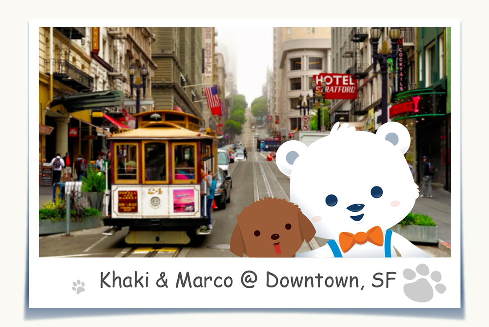
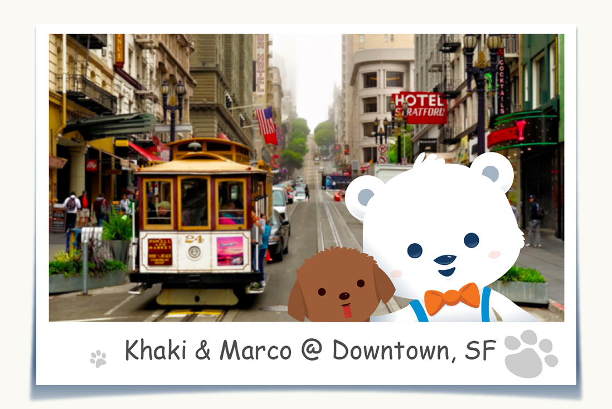

8月 23日, 2015
 By
By
Marco Bear  我真的好喜歡舊金山，這裡是各國文化的匯集地，好多好玩的地方和有趣的人。首先我和Khaki先去位在金門公園裡面的加州科學博物館，在裡面有熱帶雨林館、蝴蝶館、天文館、地震館等等，看到好多新奇的東西。接下來又去參觀同樣在金門公園的De Yong美術館，有好多名畫、雕刻和藝術品，真的是美到讓我難以忘懷。之後我們就和當地的朋友去吃加州有名的漢堡店In N’ Out。Khaki還吃了兩個漢堡，可見有多好吃。我最喜歡舊金山的地方就是金門大橋了，在橋上，你可以看到整個舊金山，我們走過了金門大橋，沿路的風景令人難忘。還有一個地方就是天使島，之前很多華僑移民到美國的時候都會先住在這邊。天使島是個很適合露營和戶外活動的地方，而且可以看到整個舊金山，很不錯吧！舊金山真是令我念念不忘，我下次一定還會在來舊金山認識更多有趣的人還有吃更多的美食。
舊金山
ByMarco Bear  我真的好喜歡舊金山，這裡是各國文化的匯集地，好多好玩的地方和有趣的人。首先我和Khaki先去位在金門公園裡面的加州科學博物館，在裡面有熱帶雨林館、蝴蝶館、天文館、地震館等等，看到好多新奇的東西。接下來又去參觀同樣在金門公園的De Yong美術館，有好多名畫、雕刻和藝術品，真的是美到讓我難以忘懷。之後我們就和當地的朋友去吃加州有名的漢堡店In N’ Out。Khaki還吃了兩個漢堡，可見有多好吃。我最喜歡舊金山的地方就是金門大橋了，在橋上，你可以看到整個舊金山，我們走過了金門大橋，沿路的風景令人難忘。還有一個地方就是天使島，之前很多華僑移民到美國的時候都會先住在這邊。天使島是個很適合露營和戶外活動的地方，而且可以看到整個舊金山，很不錯吧！舊金山真是令我念念不忘，我下次一定還會在來舊金山認識更多有趣的人還有吃更多的美食。